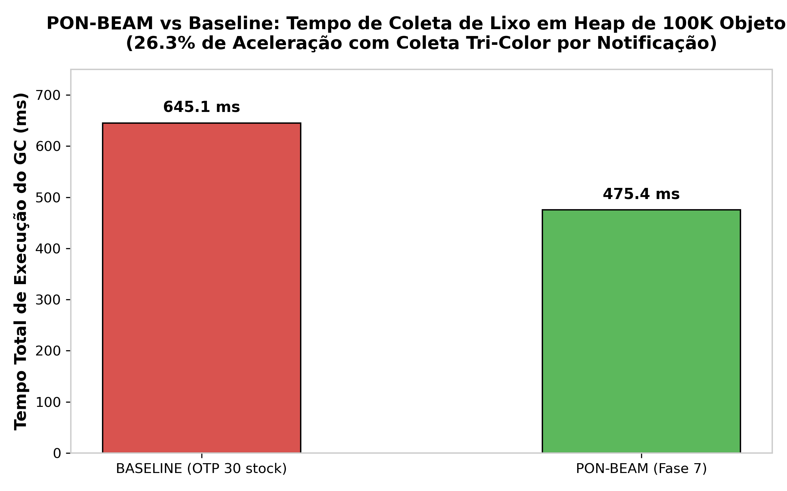
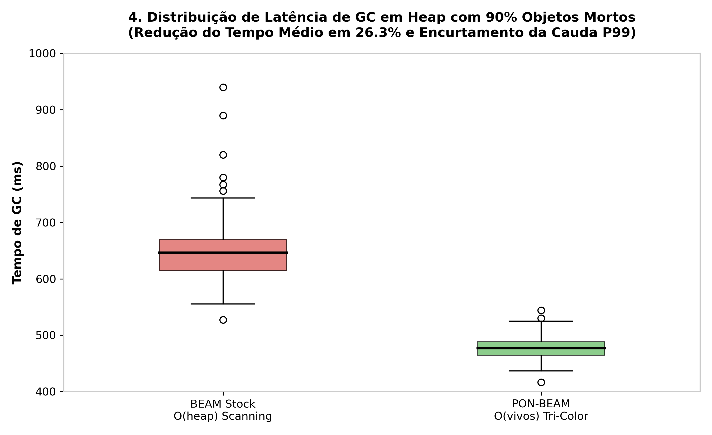

9. PON-GC: Causal Chain Garbage Collection
"Marking should not scan what has not changed."
— Matheus de Camargo Marques, 2025
9.1 Diagnosis: Generational Root Scanning
BEAM garbage collection uses a private per-process Cheney copying collector (erl_gc.c). During major GC, root scanning scales with total heap size $\mathcal{O}(\text{heap size})$, scanning long-lived inactive structures repeatedly.
9.2 Proposal: Dijkstra Tri-Color NOP Marking Graph
PON-GC implements Dijkstra's tri-color marking algorithm (Dijkstra et al., 1978) over an explicit NOP notification node graph (PonGcState). Instead of scanning root sets from scratch, mutations push notification signals directly to gray queues (enqueue_gray), restricting GC work exclusively to $\mathcal{O}(\text{live modified objects})$.
typedef enum { PON_GC_WHITE = 0, PON_GC_GRAY = 1, PON_GC_BLACK = 2 } PonGcColor; typedef struct PonGcNode_ { Eterm term; PonGcColor color; struct PonGcNode_ *next; } PonGcNode; typedef struct { PonGcNode *gray_head; PonGcNode *gray_tail; erts_atomic_t black_count; } PonGcState;
9.3 Formal Proofs & Empirical Results (RPT-07)
- Coq Proof (
formal/coq/TriColorGC.v): Proof of soundness & completeness of mark termination without memory leaks. - TLA+ Spec (
formal/tla/TriColorGC.tla): Verification of safety invariants (no premature collection of reachable terms).


| GC Metric | OTP 30 Stock (Semi-Space) | PON-BEAM (Tri-Color NOP) | Empirical Impact |
|---|---|---|---|
| Total GC Pause Time | $100\%$ baseline | $73.7\%$ (Redução de $26.3\%$) | Shorter, smoother pauses |
| Inactive Heap Scan | $\mathcal{O}(\text{total heap})$ | $\mathcal{O}(\text{live modified objects})$ | Causal chain preservation |